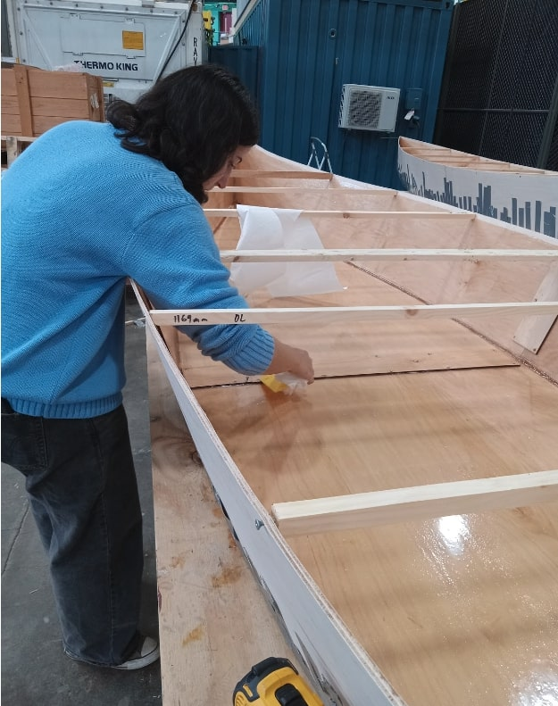
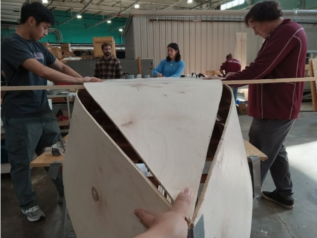

<div class="textcontainer"> <br></br> <h3>Week 7: Composites</h3> <p class = "margin"></p> This week, we took off the tape from last week and found a rather large crack on one of the ends of the boat. We sanded the rest of the boat down to make the joints have a smoother transition, and applied epoxy and fiberglass tape to the joined edges. We also carefully filled in more epoxy to the split end to hopefully build up and secure the hole. Lastly, we epoxied four gunwales to make them longer for our boat for next week. <p class = "margin"></p> <style> img { display: block; margin-left: auto; margin-right: auto; } </style>   </div>